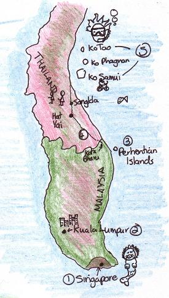

We arrived in Denpasar, and spent our first 2 nights in Kuta, a beach resort on the south west coast. Kuta was very busy and the beach was not so enticing, so we headed inland to Ubud. It was a great move - Ubud is beautiful, the people are friendly, the food is fantastic, and we relaxed and enjoyed ourselves immensely!
What a great place! For 4 pounds a night we got an ensuite room with a veranda where a breakfast of banana pancakes and fruit is brought to us. Outside each room is a small shrine where incense and fresh flowers are placed each morning. Flowers fall from trees above and can be picked up to be worn in the hair, buddha statues surround a swimming pool with a little fountain. The water is warm but refreshing.
We thought it strange when, after asking several people their name, they had the same name. It became a bit of a joke and we finally realised that everyone here has only one of four names:Wayan, Maday, Nyoman and Ketut. It depends whether you're the first child of the family (Wayan), or the second (Maday) etc. If the family has more than four children, it's back to Wayan again.
Amazing accomodation!!
We went to the Monkey Forest, where Balinese Macaques rule the forest, scurrying about moss covered stone carvings, and leaping amongst the vines that dangle from trees and temples. The monkeys are harmless enough, but have become aggressive in the face of constant attention from tourists. They are very fearless now, and one approached me as I sat down to have a drink. Soon I had one juvenile tugging at my scarf like a playful baby, while another prised my water bottle from my hands. I was not going to wrestle with it, so I gave it the bottle. It then proceeded to tip all the water on the floor, because it couldn't work out how to tip the bottle up to it's mouth!
Helen got a lot of attention in the Monkey Sanctuary
The Fire Festival
We went to see some traditional Balinese dances, which told the story of Rama and Sita from the Ramayana. One hundred men sang the music, creating beautiful rhythms and resonant harmonies and the dancers wore elaborate costumes. The music is supposed to have entranced one man, and he danced onto the stage and right into a fire made of coconut husks. He kicked these about the stage, before assistants re-built the fire. We nearly got showered by flying pieces!
The rice paddy walk
Our trusty Lonely Planet recommended that we can walk around Ubud through rice paddy fields. It was tough going finding the start of the walk and a hot, muggy day didn't help but it was pretty enough once we made headway into the fields. It seemed timeless and so quiet and we only passed about two withered locals. Towards the end of the trek was a very neat but bland looking building, a local came out, smiled, and pointed us in the way we were already going, a human road sign! We knew we were approaching civiliation when a twelve year old girl on a motorbike zoomed past us smiling.
Statues guarding each town
At the entrance to each town is a huge statue taken from the Bhagavad Gita, this is usually inside a roundabout that the traffic squirms about and seems like a huge guardian.
Balinese women carry their shopping
We hired a driver for a day to take us to see some of Bali's many Hindu temples. We visited a temple that was hand carved from rock, where the entrance was surrounded by magnificent, intricate carvings of lesser gods. We also went to the largest temple in Bali (Besakih). Our driver had recommended that we hire a guide to show us around the temple, and told us to pay only 40,000Rupiah (about £2.50). As we approached the temple, we were accosted by guides, who tried to get us to pay US$50! We refused, saying we would go into the temple without a guide, which they said we could not do (we could!). Eventually after about 15 minutes of haggling and wrangling, we paid 40,000Rupiah - hooray! The guide was very good, and told us the history of the temple. Then he took us into one of the enclaves to pray. We felt very privileged, as we had been told that this was not permitted. The guide gave us flowers, which we took in turn and placed behind our ears. Then he anointed us with holy water, and pressed rice grains to our foreheads. It was really special, until he asked us to make an offering of money. We did this, putting some notes onto a tray, but eagle-eye guide informed us that we had not offered enough! We felt quite disappointed, and felt that the moment had been ruined a little. Sometimes it seems that everyone just wants your money!
The Temples
We arrived in Hong Kong at a time I hate arriving, in the evening. We were dropped right in the mad bustle of the Kowloon district at Mong Kok. We had to fight against the tide of people (always going the other way) and squeeze through the crowds watching Manga TV on the street and into an elevator to take us to the fifteenth floor of the An Shah hostel. Our windowless room had a simple extractor fan into the corridor and a small drainpipe to draw in 'clean' air from outside. When travelling it's very easy to forget what day it is, but with no sign of daylight you can forget whether it's night or day. The room was hilarously small but the bathroom had us in stitches: the shower was above the toilet, and to sit on this you had to fit your knees beneath the sink. All this made for a great way to save time in the morning as you could do everything from one position.
We decided to explore the city with an early start the next day - bad mistake. Nothing is open until lunchtime including shops and museums. We had fun when we finally did make it to the museums, where we learnt that, because China only wanted our money for exchanging goods in the days of the Empire (they didn't want our mascots of Wales carved out of coal or anything like that), we got them hooked on the Opium we grew in India. They suddenly wanted our drugs and so we had something to trade, hence the Opium Wars began. We also went to a planetarium show that went so deeply into the quantum mechanics of black holes that kids started crying.
Hong Kong has the largest escalator in the world at 800 metres long. It is used as a commuter system and reverses its direction at ten o'clock in the morning. Of course we had to ride it (we felt like real out-of-towners) and were a bit disappointed that it wasn't one long continuous run. We actually had to keep getting off, walking a few metres before hopping on the next section. We went up to an area known as 'The Peak' for a great view and to stroll past a few Ex-Pat houses. The Ex-Pat community seems very alive and there are several British type pubs and breweries.
We were lucky enough to catch a solar cart race on a sunny (luckily) Sunday in the park and learnt that the carts have to have pedals otherwise the government classes them as road vehicles and they have to pass all sorts of stringent tests.
We didn't hear of much censorship from the Chinese government as Hong Kong will enjoy certain liberties for the next fifty years (to do with the British once borrowing it) although we did manage to talk to some Falun Gong pratitioners and see some of the tortures they are going through. All in all, we weren't that impressed with Hong Kong, it had some good gadgets but the crowds of people were too pushy and rude. The subway system had internal sliding doors on each platform that only opened when a train was in and matched up with the train doors - so you couldn't even top yourself on the track.
We went to see the biggest Buddha in the world.

We expected this to be ultra-clean, efficient, plasticky and characterless and we weren't disappointed. Our hostel, 'The Inn-Crowd' was on the edge of Little India so it was good for veggie food and a dose of Hindu spirituality. It gave us goose bumps to think that we'd soon be in India itself. Our first outing was to the night safari. This was a night time visit to an open zoo where an electric tram takes you past lions and rhinos and the like. It was good to see the animals although it seemed a little staged. The animals were kept behind invisible fences or hahas, you'd turn a corner and 'Look! a lion eating a leaf', around the corner and 'here is a family of gazelles'. It all seemed very 'Jurassic Park' and I expected it to go wrong all of a sudden - unfortunately it didn't.
A day-trip to Sentosa Island (and its amazing plastic Merlion) was next with our new friend 'Jingles'. We had a laugh riding the monorail around this made-up island and its 'original' monoliths still with the pricetag stuck on.
All the newcomers to the hostel were going mad, it was close to the Sim Lim centre, a gigantic shopping mall of gadgets. Travellers were blowing their budgets on 'cheap' cameras and computers. I managed to buy a new camera as I got sucked in - so the pictures should be getting better.
We bussed it up from Singapore to Kuala Lumpur (KL) and stayed in the Golden Triangle at Pujangga Homestay. This is the area to shop and one shopping centre leads you into another.
This lady created the most intricate pictures from cutting out paper
It was also a chance to meet up with an old student of mine, Sureshnan Krishnan, who looked after us and took us places. He now works for Cadburys so it meant lots of free chocolate too. We had amazing timing (for once) as it we were there for the Hindu festival Thaipusam (festival in honor of Lord Murugan). We got to the Batu Cave temple at around 2am and we were a little worried when Sureshnan left us, but he said we'd be okay and we were. We joined the swarms ascending the 272 steps of the Batu caves and stared at the pierced devotees who were in a trance. Many have tongues and cheeks pierced as well as fish hooks dangling from their backs.
We took a sleeper train through Malaysia to the north east coast, the sleeper was great, like a long dorm. We stayed in Khota Bharu for a night before jetting off to Pulau Perhentian Kecil, a small island off the east coast. This was beautiful, just like the film 'The Beach'. You could walk across the width in fifteen minutes and see the huge monitor lizards creeping amongst the undergrowth.There wasn't much to do here except chill out, swim and sunbathe. I managed to try a SCUBA dive to see if I liked it (which I did), and this was to lead on to better things (more later!). The rooms here were even cheaper than Bali and the place was out of season so it was quiet despite the monsoon finishing early this year. Our beach hut was on stilts and was a thirty second walk to the warm ocean, heaven on earth.
(Route 4 on map) We could just stay in Pulau Perhentian quite happily, but Thailand beckoned. We caught a bus to the border and walked the hot, dusty walk across the border narrowly avoiding the scooters riding up the path. Once through, we got a minibus to Hat Yai immediately as the south east of Thailand is known to be fairly volatile. We saw evidence of this with the numerous road blockades and gun-toting soldiers.
Hat Yai felt safe and we enjoyed eating and mingling at the night markets. We went up the East coast as we decided to avoid the Tsunami hit areas of the West, and went to Songkhla and Nakhon Si Thammarat. This town was famous for its shadow puppetry and we managed to catch a show and bought some shadow puppets.
From here we took a bus and ferry to Ko Samui. It was a very touristy island and we were back amongst all the white people again. We hired a moped to tour the island and took in the sights of some great temples. One is really colourful and looks like a cartoon and sits on this gigantic lotus flower in a pond.
A few days later, we left for the island of Koh Tao. The ferry stopped at Koh Phangnan, famous for its full moon parties, although as we'd caught the moon in the wrong phase, we carried on. The clear water surrounding Koh Tao makes it famous for diving, there are loads of diving schools here. I stayed to complete my open water PADI certificate. During our stay here we heard that the island was attempting a world record for the most divers simultaneously submerged in an area, the current record was 500. I immediately signed up and spent the day in the water to help them break a new world record, 760 divers submerged together-and I've got the T-Shirt.

After we left Koh Tao, we took a bus to Bangkok (8 on map), which unfortunately broke down for 4 hours outside a cafe which refused to make vegetarian food - they didn't seem to want to mix noodles and vegetables, so we made do with plain rice and a bag of crisps. We spent a very brief night in Bangkok, then left for Chiang Mai in the north (6 on map). Chiang Mai is an old town, surrounded by a newer town. The old bit has a moat and the remains of a wall encircling it, and has about 300,000,000 wats (temples) inside (alright, I may have exaggerated just a tiny bit here, but when you're walking round them, it certainly feels like this many). We visited quite a few wats, and tried to get to grips with Buddhism, but found ourselves with more and more questions. Luckily, the town has a Buddhist university, which hosts "Monk Chat" every week, so we went along to grill-a-monk. We spent nearly 2 hours asking them about Buddhism, monk life, and reincarnation, but I certainly came away with even more questions than I started with.
In Chiang Mai with some novice monks
The other main attraction of the town is it's markets, of which there are 3 main ones: the day market, the night market and the Sunday market. The day market is quite ordinary, albeit massive, and sells things that local people are likely to buy, such as clothes and food. The night market is a sprawling mass of stalls and hawkers selling things that tourists want to buy, such as 'traditional' clothing and cheap fake 'label' clothing. The Sunday market is the best though: it sprouts like a fungus and spreads itself throughout many of the old town centre's streets. Here, one can buy just about anything and then get a massage to refresh your aching feet!
We decided to learn something from Thailand, so went on a one-day cooking course. We made 'Tom Yam' soup, which is very spicy and is flavoured with lemongrass and galangal (move over Delia), green and yellow curries, 'Pad Thai' (a noodle and peanut dish) and spring rolls (yummy). We also made Thai desserts - sticky rice with mango, and bananas in coconut milk. The savoury dishes were delicious, but the puddings were horribly sweet.
We also increased our culture quotient by going on a trek into the hilltribe area north of Chiang Mai. The first day started with the usual almost-puke-inducing ride into the mountains, lurching in the back of a van whilst not having a clear view of where we were going. Eventually, we prised ourselves out and walked for a little while through rice paddy fields, passing villagers, small bamboo huts on stilts and nodding buffalo, whose wooden bells chimed gently as they nodded their greeting to us.
After an hour, we came across a small village and were promptly placed on the backs of three leathery elephants. I sat on a bench (called a howdah) attached to our elephant's back, like someone from the days of the Raj, while Sam was given the front seat, sitting on the neck and therefore constantly fighting to stay on. A bum-numbing hour and a half later, we said goodbye to Nellie and continued our journey on foot.
We eventually came to a village along a river where the kids were kicking a rattan ball around, and climbed a hill to arrive at our first camp, a little bamboo hut on stilits. Dinner was cooked in another hut whilst some of the local tribeswomen sold us their wares: jewellery made of seeds and woven bags.
The next day was walk-tastic, and we were glad to find a fresh waterfall to wash under after 3 hours in the hot sun. Our lunch of fried rice was wrapped in banana leaves, and fresh pineapple completed the meal. The walk took us through amazing forest, alongside trickling streams, and up and down and up and down over the hills. We were glad when we crossed our final rickety bamboo bridge (the dodgiest bridge I've seen) to our riverside huts.
The dodgiest bridge ever...................Or is it this one??
The final day was our fun day! The crew had lashed long, sturdy bamboo stalks together to create three rafts. Our bags were balanced on bamboo tripods (these people make everything from bamboo!), while we balanced our way along a river that was a little low in places. After a delightful trip downstream it was time to get back into the back of the van for a bumpy 4 hour drive back to Chiang Mai.
(7 on map) Pai is a beautiful little town in the north of Thailand, where we spent a few days relaxing in the sunshine, and enjoying the cool mornings. We hired a moped and went off to explore the local area, taking in a wat or two, and waterfalls where local children used the rocks as a slide into the pool at the bottom. We went to the nearby hot springs whilst it was still cool in the morning, and eased ourselves into the hot water - something we hadn't felt in a long time! Our hut on stilts (this time made of bamboo and banana leaves!) was right next to the river - absolutely lovely!
Images of Pai, a Wat at full moon,a bridge outside our hut,and the riverside huts we stayed in
Everyone rides mopeds in Thailand. You can buy petrol anywhere, small grocery shops sell it from milk bottles on the street. Suddenly, these 125cc shopping bikes become the coolest mode of transport and people who wouldn't be seen riding one dead in the UK are concentrating, bent over to reduce wind resistance and reach 80km/h. There are some excellent obstacles and you hav to be on guard, I banked a corner outside of Pai to come across three elephants hogging the road.
Our trusty transport for exploring the area
Not a place we were looking forward to, Bangkok is where we fly from to our next destination-India. We found a place just off the infamous Koh San Road ready to explore the city in the four days we have before our next flight. We applied for our India visa straight away (and it cost us 60 pounds!) only to be told it would take a week! So we've had to delay our flight and get to like Bangkok.
The main thing to do here is shop in the markets, I enjoy trying to get my message across to non-English speakers, impersonating chickens, miming fish, gesticulating wildly or drawing cartoons. The word 'cor-a-pie!' means 'excuse me!' in Thai, as soon as you say it people jump out of the way and I catch myself acting it out, pointing at my imaginery pie, Beano style. We also hear the multi-lingual word 'Hello!' so many times and it conveys so much meaning, from 'ride this taxi','eat here','buy this,and 'show your ticket'.
Walking the side streets is amazing and I can imagine this could have been England 200 years ago. There are whole streets selling the same goods-so you walk down a sewing machine street, or a door street. No traffic stops when you cross the road, even at a crossing and a green man is flashing. Crossing is by general concensus, when there are enough people we gradually inch forward then eventually storm across.
We knew there was a puppet theatre somewhere in the market area and, after dancing around like a mannequin and drawing a puppet, the girls we were asking said 'Ah, Jawlewi!'. We said 'Yes, yes! Jawlewi!' thinking that was Thai for 'puppet'. We later found the Joe Louis puppet theatre.
Why we're tee-totallers in Thailand
It's impossible to buy a drink here when the price (although fairly cheap at 1 pound a beer, 2 pounds for wine) is the same price as a good meal, a night in a guest house, a DVD, new clothes or a chess set. It's doing us the world of good but we're now addicted to retail.
One of our favourite veggie restaurants is called May Kaidees I reckon it's a play on the name 'McDonalds', it seems too close, what do you think? By the way, the Ronald McDonald statue here holds his hands together in the pray Wai attitude to welcome the Thai people to his 'wonderful' restaurant!